Lenguajes
Los siguientes son algunos de los lenguajes de programación que emplean como paradigma la programación lógica.
- Prolog
- Mercury
- CLP (FD)
- CSP (Constraint Satisfaction Problem)
- Lambda Prolog
- Logtalk
- Alma-0
- CLAC(Logical Composition with the Assistance of Computers)
- Gödel
- miniKanren
- Curry
- Ace
- PALs
- Actor Prolog
- SequenceL
- Datalog (Logic Programming in Python)
- Absys
- Vadalog
- CycL
Ejemplos en SWI-Prolog listos para ejecutar.
Ejemplo en Jupyter Notebook, utilizando kernel Calysto_prolog (Descarga)(Colab).
Prolog
Es un Lenguaje de Programación diseñado para representar y utilizar el conocimiento que se tiene sobre un determinado dominio. Los programas en Prolog responden preguntas sobre el tema del cual tienes conocimiento.
La popularidad del lenguaje se debe a su capacidad de deducción y además es un lenguaje fácil de usar por su semántica y sintaxis. Solo busca relaciones entre los objetos creados, las variables y las listas, que son su estructura básica.
Escribir un programa en Prolog consiste en declarar el conocimiento disponible acerca de objetos, además de sus relaciones y sus reglas, en lugar de correr un programa para obtener una solución, se hace una pregunta, el programa revisa la base de datos para encontrar la solución a la pregunta, si existe mas de una solución, Prolog hace un barrido para encontrar soluciones distintas. El propio sistema es el que deduce las respuestas a las preguntas que se le plantean, dichas respuestas las deduce del conocimiento obtenido por el conjunto de reglas dadas.
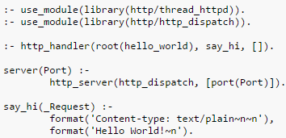
- Alain Colmerauer y Philippe Roussel (Finales de los 70’s).
- Proviene del francés PROgrammation en LOGique.
- Producción interpretada.
- Se basa en Lógica de primer orden.
- Es declarativo.
- Backtracking.
- Compilador de ProLog online: https://swish.swi-prolog.org/.
Ejemplos de aplicación
- Genexus y Linx: plataformas Low-code desarrolladas utilizando Prolog.
Low-code es una modalidad de desarrollo de software que permite que los programadores diseñen aplicaciones rápidamente y con un mínimo de codificación manual por medio de un sistema de arrastrar y soltar. Funciona a través de una interfaz visual con lógica simple, en donde se abstrae el código de las acciones y comandos, haciendo el proceso mucho más sencillo.
Mercury
Mercury es un lenguaje de alto nivel (es decir, no se preocupa de problemas como la reserva y liberación de memoria) derivado de Prolog, pero con una implementación que le hace ser más útil para representar y tratar problemas del mundo real. Combina toda la expresividad del lenguaje declarativo con avanzadas técnicas de análisis estático y detección de errores. Es un lenguaje compilado, lo que le permite detectar numerosos errores antes de poder ejecutar la aplicación. El compilador “traduce” el programa de lenguaje Mercury a C, que es un lenguaje portable a cualquier plataforma. Además, al igual que el lenguaje de Gödel, Mercury es un lenguaje que utiliza módulos, lo que da una gran modularidad en el desarrollo de aplicaciones, solventando así uno de los mayores problemas a los que se enfrentaban los lenguajes de programación lógicos.
- Es puramente declarativo Æ los predicados y funciones en Mercury siempre obtienen conclusiones lógicas.
- La comunicación con el programa es mediante una librería de funciones que necesitan como parámetro el estado anterior del “mundo” además del resto de parámetros que considere el usuario necesario y dan como salida el nuevo estado del “mundo” además de otros resultados específicos.
-
La declaración de tipos en Mercury se hace de manera lógica:
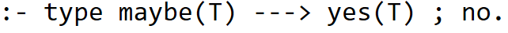
-
Se puede predeterminar el número de veces que se va a llamar a un predicado dentro del programa.
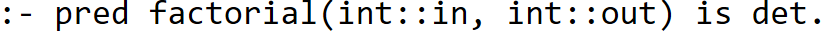
“det” indica una vez, “semidet” como mucho una vez, “multi” al menos una vez y “nondet” un número arbitrario de veces El compilador comprobará que se cumple y, en caso contrario, rechazará el programa. - Mercury tiene un sistema modular. Los programas consisten en la composición de uno o más módulos. Cada módulo tiene una sección llamada interface donde se declaran todos los tipos, funciones y predicados que se pueden exportar a otros módulos y otra sección mplementation donde están las definiciones de las entidades exportadas así como definiciones de tipos y predicados no exportables, locales al módulo.
- El compilador genera código muy eficiente.
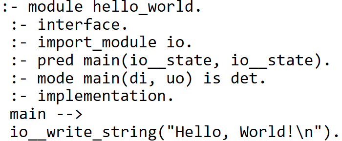
- Fergus Henderson, Thomas Conway y Zoltan Somogyi (1995).
- Sintaxis parecida a ProLog.
- Diseñado para resolver “aplicaciones del mundo real” de forma robusta.
- Soporta polimorfismo.
- Un programa escrito en Mercury es más rápido que uno equivalente realizado en Prolog.
CLP (FD)
Otra extensión de Prolog, especializado en los problemas CSPs (Constraint Satisfaction Problem). De forma general, podemos decir que un programa en CLP(FD) consta de tres partes: “generación de variables” (donde también se especifica su domino), “definición de restricciones” (sobre las variables) y “labeling”, donde se instancian las variables por enumeración.
Ejemplo: SEND MORE MONEY puzzle:
CycL
CycL es el lenguaje de programación lógica asociado con el sistema Cyc, que es una base de conocimiento de inteligencia artificial y un proyecto de investigación con el objetivo de codificar conocimientos generales en forma computable. El sistema Cyc utiliza CycL para representar la información y las reglas que permiten a la máquina razonar acerca de ese conocimiento de una manera que imita el razonamiento humano.
CycL es un lenguaje extremadamente expresivo y permite la representación de conocimientos muy detallados y sutiles sobre el mundo. Permite declarar hechos, reglas, y realizar consultas complejas. También puede manejar excepciones y tiene la capacidad de representar el conocimiento contextual, lo que significa que puede entender cuándo ciertas reglas o hechos se aplican y cuándo no, basándose en el contexto dado.
Godel
Gödel es un lenguaje en el que las sentencias lógicas llevan un orden y en el que existe el polimorfismo. Está basado en módulos (que aceptan polimorfismo) y en tipos de datos (soporta enteros y racionales con una precisión infinita, y número en coma flotante) y tiene una amplia librería de módulos predefinidos.
Es un buen lenguaje para tareas de meta-programación, tales como compilación, depuración, análisis, verificación o transformación de programas, ya que es mucho más declarativo que Prolog, por ejemplo. Como curiosidad, se puede destacar que este lenguaje no funciona en un entorno Windows.
Ejemplo: Máximo Común Divisor:
miniKanren
miniKanren es un lenguaje específico de dominio incorporado para la programación lógica.
El lenguaje central miniKanren es muy simple, con solo tres operadores lógicos y un operador de interfaz. miniKanren se ha implementado en un número creciente de lenguajes de host, incluidos Scheme, Racket, Clojure, Haskell, Python, JavaScript, Scala, Ruby, OCaml y PHP, entre muchos otros idiomas.
miniKanren está diseñado para ser modificado y ampliado fácilmente; las extensiones incluyen la Programación Lógica de Restricciones, programación de lógica probabilística, programación lógica nominal y presentación.
A continuaccion un ejemplo de la implementacion de esta libreria en python con un enfoque de pade hijo.

Ahora tratemos de obtener un padre de Bart.

Ahora los dos hijos de homero.
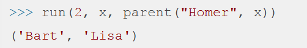
SequenceL
SequenceL es un lenguaje de programación funcional de propósito general que permite la paralelización automática, su objetivo principal es mejorar el rendimiento de los procesadores con varios núcleos. Es un lenguaje, que, aunque tiene muchas herramientas de paralelización, está enfocado en la facilidad de programación para el usuario. Su principal ventaja es que permite escribir código común, y el software se encarga de maximizar el rendimiento del procesador, por medio de programación paralela. Sin embargo, aunque parece un lenguaje perteneciente a otro tipo de paradigma de programación, se caracteriza porque basa su lógica en hechos, reglas y consultas. Lo cuál lo hace un lenguaje con mucho potencial y muy diferente a los otros lenguajes aquí mencionados.
A continuación, una pequeña tabla que muestra las diferencias entre SequenceL y otro lenguaje popular, Java, permitiendonos ver la facilidad de escritura de código:

Datalog
pyDatalog agrega el paradigma de programación lógica a la extensa caja de herramientas de Python. Los programadores lógicos ahora pueden usar la extensa biblioteca estándar de Python, y los programadores de Python ahora pueden expresar algoritmos complejos rápidamente.
Datalog es un lenguaje verdaderamente declarativo derivado de Prolog, con sólidos fundamentos académicos. Datalog sobresale en la gestión de la complejidad. Los programas de registro de datos son más cortos que su equivalente de Python, y las declaraciones de registro de datos se pueden especificar en cualquier orden, tan simple como una fórmula en una hoja de cálculo.
Ejemplo:
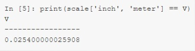

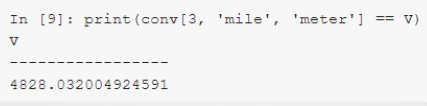
Otros ejemplos
- Grafos dirigidos en Prolog, busqueda de caminos:

- Serie Fibonacci en Prolog:

- Serie Fibonacci en Mercury:
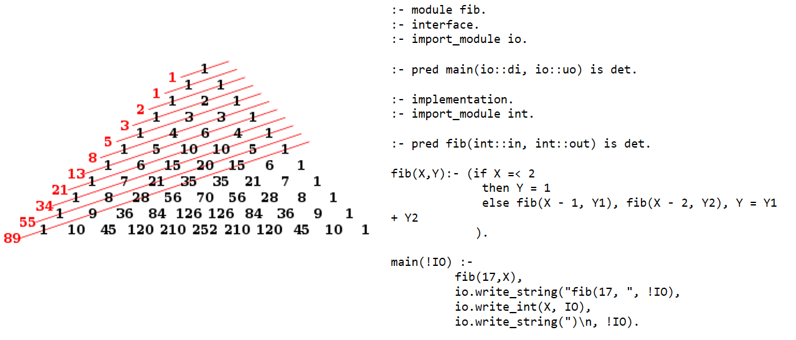
- Juego de ahorcado en ProLog:
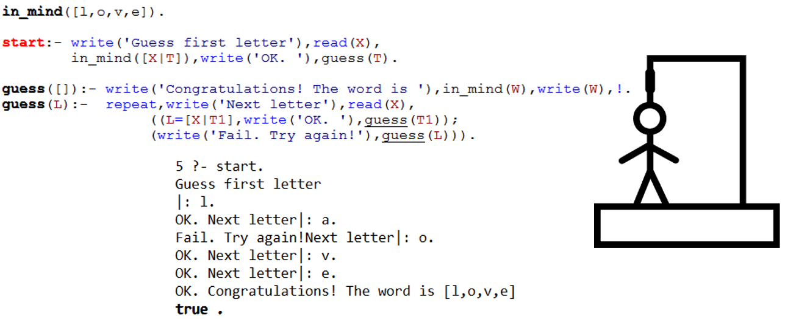
- Algoritmo merge sort en ProLog:
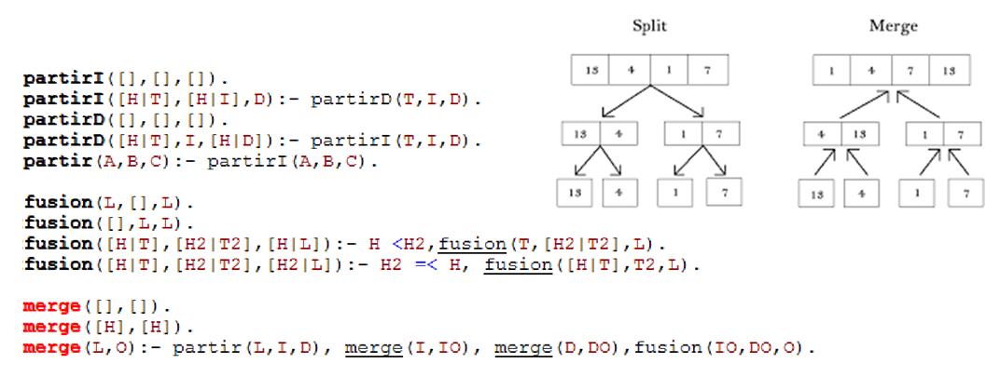
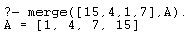
Ejemplo comparativo
Implementación de un árbol familiar o genealógico por medio de tres lenguajes de programación lógica diferentes. El objetivo es descubrir las similitudes y diferencias entre algunos de los lenguajes más populares de la programación lógica. Supongamos que tenemos el siguiente árbol familiar:
Primero, veremos la implementación y modelado del ejemplo en Prolog:
% Hechos
padre(luis, ana).
padre(luis, jose).
padre(luis, juan).
padre(cesar, pedro).
padre(cesar, david).
padre(jose, sofia).
madre(maria, ana).
madre(maria, jose).
madre(maria, juan).
madre(ana, pedro).
madre(ana, david).
madre(isabel, sofia).
% Reglas
hermano(X, Y) :-
padre(Z, X),
padre(Z, Y),
madre(W, X),
madre(W, Y),
X \= Y.
abuelo(Abuelo, Nieto) :-
padre(Abuelo, Hijo),
padre(Hijo, Nieto);
padre(Abuelo, Hijo),
madre(Hijo, Nieto).
abuela(Abuela, Nieto) :-
madre(Abuela, Hijo),
madre(Hijo, Nieto);
madre(Abuela, Hijo),
padre(Hijo, Nieto).
Veamos ahora la implementación y modelado del ejemplo en Mercury:
:- module relaciones_familiares.
:- interface.
:- import_module list.
:- type padre ---> luis; cesar; jose.
:- type madre ---> maria; ana; isabel.
:- type persona ---> luis; cesar; jose; maria; ana; isabel; juan; pedro; david; sofia.
:- type relacion ---> padre(persona, persona); madre(persona, persona).
:- func relaciones_familiares = list(relacion).
relaciones_familiares =
[
padre(luis, ana), padre(luis, jose), padre(luis, juan),
padre(cesar, pedro), padre(cesar, david),
padre(jose, sofia),
madre(maria, ana), madre(maria, jose), madre(maria, juan),
madre(ana, pedro), madre(ana, david),
madre(isabel, sofia)
].
:- func hermano(persona, persona) = bool.
hermano(X, Y) :-
padre(Z, X), padre(Z, Y),
madre(W, X), madre(W, Y),
X \= Y.
:- func abuelo(persona, persona) = bool.
abuelo(Abuelo, Nieto) :-
( padre(Abuelo, Hijo), padre(Hijo, Nieto) ;
padre(Abuelo, Hijo), madre(Hijo, Nieto) ).
:- func abuela(persona, persona) = bool.
abuela(Abuela, Nieto) :-
( madre(Abuela, Hijo), madre(Hijo, Nieto) ;
madre(Abuela, Hijo), padre(Hijo, Nieto) ).
:- implementation.
:- import_module string.
Por último, veremos la implementación y modelado del ejemplo en CycL:
; Definición de relaciones familiares
(#$isa #$Luis #$Padre)
(#$isa #$Cesar #$Padre)
(#$isa #$Jose #$Padre)
(#$isa #$Maria #$Madre)
(#$isa #$Ana #$Madre)
(#$isa #$Isabel #$Madre)
(#$padreDe #$Luis #$Ana)
(#$padreDe #$Luis #$Jose)
(#$padreDe #$Luis #$Juan)
(#$padreDe #$Cesar #$Santiago)
(#$padreDe #$Cesar #$David)
(#$padreDe #$Jose #$Sofia)
(#$madreDe #$Maria #$Ana)
(#$madreDe #$Maria #$Jose)
(#$madreDe #$Maria #$Juan)
(#$madreDe #$Ana #$Santiago)
(#$madreDe #$Ana #$David)
(#$madreDe #$Isabel #$Sofia)
; Reglas de relaciones familiares
(#$and
(#$hermanoDe ?X ?Y)
(#$padreDe ?Z ?X)
(#$padreDe ?Z ?Y)
(#$madreDe ?W ?X)
(#$madreDe ?W ?Y)
(#$notEqual ?X ?Y)
)
(#$or
(#$abueloDe ?Abuelo ?Nieto)
(#$and
(#$padreDe ?Abuelo ?Hijo)
(#$padreDe ?Hijo ?Nieto)
)
(#$and
(#$padreDe ?Abuelo ?Hijo)
(#$madreDe ?Hijo ?Nieto)
)
)
Comparación
Cada uno de los lenguajes define primero un conjunto de hechos estableciendo reglas entre los elementos involucrados. Para el caso de Prolog y CycL, se definen tuplas que establecen una relación entre los elementos listados. Con Prolog, se da el nombre a la relación y se pasan como parámetros los elementos de dicha relación:
% Hechos
padre(luis, ana).
padre(luis, jose).
padre(luis, juan).
padre(cesar, pedro).
padre(cesar, david).
padre(jose, sofia).
madre(maria, ana).
madre(maria, jose).
madre(maria, juan).
madre(ana, pedro).
madre(ana, david).
madre(isabel, sofia).
De esta manera, con la sentencia padre(X, Y). establecemos que el elemento X es el padre del elemento Y;
de manera análoga, con la sentencia madre(X, Y). establecemos que el elemento X es la madre del elemento Y.
Para CycL la estructura es similar:
; Definición de relaciones familiares
(#$isa #$Luis #$Padre)
(#$isa #$Cesar #$Padre)
(#$isa #$Jose #$Padre)
(#$isa #$Maria #$Madre)
(#$isa #$Ana #$Madre)
(#$isa #$Isabel #$Madre)
(#$padreDe #$Luis #$Ana)
(#$padreDe #$Luis #$Jose)
(#$padreDe #$Luis #$Juan)
(#$padreDe #$Cesar #$Santiago)
(#$padreDe #$Cesar #$David)
(#$padreDe #$Jose #$Sofia)
(#$madreDe #$Maria #$Ana)
(#$madreDe #$Maria #$Jose)
(#$madreDe #$Maria #$Juan)
(#$madreDe #$Ana #$Santiago)
(#$madreDe #$Ana #$David)
(#$madreDe #$Isabel #$Sofia)
En este caso, en CycL primero establecemos relaciones para definir que ciertos elementos son Padre o Madre de otros elementos,
mediante el uso de las sentencias (#$isa #$X #$Padre) y (#$isa #$Y #$Madre). Posteriormente, se establecen
las relaciones con los demás elementos por medio de las sentencias (#$padreDe #$X #$Y) y (#$madreDe #$P #$Q),
que indican que X es padre de Y y P es madre de Q, respectivamente.
Mercury define primero tipos para luego establecer las relaciones de una forma similar a los otros lenguajes:
:- type padre ---> luis; cesar; jose.
:- type madre ---> maria; ana; isabel.
:- type persona ---> luis; cesar; jose; maria; ana; isabel; juan; pedro; david; sofia.
:- type relacion ---> padre(persona, persona); madre(persona, persona).
:- func relaciones_familiares = list(relacion).
relaciones_familiares =
[
padre(luis, ana), padre(luis, jose), padre(luis, juan),
padre(cesar, pedro), padre(cesar, david),
padre(jose, sofia),
madre(maria, ana), madre(maria, jose), madre(maria, juan),
madre(ana, pedro), madre(ana, david),
madre(isabel, sofia)
].
Las sentencias type definen los tipos de elementos del problema, e incluso definen la estructura de las relaciones padre y madre.
Para establecer las relaciones concretas, se define una función que construye un listado con las tuplas de elementos para cada relación.
Luego de establecer los hechos, cada lenguaje se encarga de definir las reglas del problema. Vamos a comparar la manera en la que se define la regla "hermano" (se entiende que dos personas son hermanas si tienen el mismo padre y la misma madre). Prolog implementa la regla de la siguiente manera:
hermano(X, Y) :-
padre(Z, X),
padre(Z, Y),
madre(W, X),
madre(W, Y),
X \= Y.
La regla "hermano" recibe dos parámetros, X y Y. Las dos primeras sentencias de la regla, padre(Z, X) y padre(Z, Y),
verifican que exista una relación que establezca que Z es el padre tanto de X como de Y. Las siguientes dos reglas, madre(W, X) y madre(W, Y),
verifican que otro elemento W sea la madre de X y, al mismo tiempo, la madre de Y. Aunque en teoría ya se podría deducir que X es hermano de Y, aún queda el caso
en el que X y Y sean la misma persona. La última sentencia de la regla, X \= Y., descarta esta posibilidad, indicando que X y Y deben ser personas
diferentes para que la regla "hermano" finalmente se cumpla.
Aunque la sintaxis varía un poco en los lenguajes Mercury y CycL, las reglas se definen de manera muy similar:
:- func hermano(persona, persona) = bool.
hermano(X, Y) :-
padre(Z, X), padre(Z, Y),
madre(W, X), madre(W, Y),
X \= Y.
(#$and
(#$hermanoDe ?X ?Y)
(#$padreDe ?Z ?X)
(#$padreDe ?Z ?Y)
(#$madreDe ?W ?X)
(#$madreDe ?W ?Y)
(#$notEqual ?X ?Y)
)
Las reglas de "abuelo" y "abuela" también se definen de manera muy similar en los tres lenguajes.